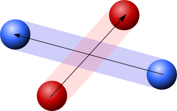

Please note: this article is part of the older "Objective-C era" on Cocoa with Love. I don't keep these articles up-to-date; please be wary of broken code or potentially out-of-date information. Read "A new era for Cocoa with Love" for more.
An Asteroids-style game in CoreAnimation, Part Four.
Over the last three weeks, I presented a simple 2D game using CoreAnimation. For the final post in this series, I'll look at CATransactions and why I didn't use them in the game to handle animations and I'll look at the performance of CoreAnimation as numbers of CALayers and sizes of CALayers change.
Frame-based animation
The Quartzeroids2 game (download the complete code from the previous post) uses traditional frame-based updates to process, position and render all objects on screen. This works much like stop-motion animation as filmed with optical cameras: a frame is needed approximately every 30th of a second so the game moves all objects to their locations for this new frame (as determined by speed and trajectory) and the renderer takes a snapshot.
As with stop-motion animation, the only reason this process appears smooth to the eye is because the frames are frequent enough that they run together appearing like motion.
This is the traditional way that 2D games are implemented. Initially though, I wanted to handle the game in a different way. Frame-based animation has two main problems:
- The CPU must reprocess all game objects 30 times a second (or more) to place them on screen, creating a continuous burden on the CPU.
- Even at 30 frames a second, fast moving objects leave distinct gaps which can cause problems with collision detection.
The following diagram illustrates the second point:
The blue and red balls never touch during a keyframe but if they were moving continuously would clearly collide in the middle. Such collisions could be detected by significantly increasing the frame-rate but that isn't always technically possible and would certainly make the first problem (excessive CPU usage) worse.
Continuous animation using CATransactions
What I wanted to do instead of frame-based animation was to create a continuous game instead.
The idea would be: instead of the game engine reprocessing for each frame, just load the speeds and trajectories into CoreAnimation and let the animation run automatically until the next "event" (collision or user action). That way, the animation runs smoothly, the game engine performs the minimum amount of work and all collisions are mathematically perfect (since we calculate them in advance using trajectory equations instead of reading quantized data at frame update time).
Continuous animation would involve taking the basic line equation (y = mx + b) for the two bounding edges of each object's trajectory and colliding it with the bounding box of the screen and every other object's trajectory equations. Between now and that first collision each object could be animated using a CoreAnimation CAAnimation, with the animations for all objects tied together using a CATransaction.
The first downside to this was adding user involvement. When the user presses a key, they are changing the modelling for their player object which involves recalculating the next collision. This means that while the user is pressing a key, 30 recalculations per second may be required. On its own, this negative won't outweigh the positives. Recalculating in his manner isn't much more work than traditional frame-based collision detection which is always performed 30 frames-per-second or more — and these collisions would still be mathematically perfect.
Testing CATransactions
To see how the worst case of 30 updates per second would perform, you can add CATransaction-based animation to Quartzeroids2 by removing the actionForKey: method from "ImageLayer.m" in the program and replacing the following code in "GameObjectLayer.m":
self.imageName = gameObjectImageName;
self.bounds = CGRectMake(0, 0, width, height);
self.position = CGPointMake(x, y);
self.transform = CATransform3DMakeRotation(angle, 0, 0, 1.0);
self.hidden = !visible;with the CATransaction based version:
double distance =
sqrt((self.position.x - x) * (self.position.x - x) +
(self.position.y - y) * (self.position.y - y));
BOOL wrapping = distance > gameHeight;
if (wrapping)
{
[self removeAllAnimations];
}
[CATransaction begin];
[CATransaction
setValue:[NSNumber numberWithDouble:GAME_UPDATE_DURATION]
forKey:kCATransactionAnimationDuration];
if (wrapping)
{
[CATransaction
setValue:[NSNumber numberWithBool:YES]
forKey:kCATransactionDisableActions];
}
self.imageName = gameObjectImageName;
self.bounds = CGRectMake(0, 0, width, height);
self.position = CGPointMake(x, y);
self.transform = CATransform3DMakeRotation(angle, 0, 0, 1.0);
self.hidden = !visible;
[CATransaction commit];Performance-based failure
The following performance numbers are running on my 2 x 2Ghz PowerMac G5.
| Number of CALayers animated using CATransaction | Frames per second |
| 50 | > 33 |
| 75 | 10-25 |
| 100 | <10 |
| 150 | <2 |
I've given ranges since the frames per second varied significantly. This compares poorly with the CATransaction disabled version, where all tests ran faster than 30 frames per second.
Since each asteroid represents two separate objects and every shot fired is another object on screen, I decided that an inability to handle more than 50 objects smoothly was unacceptable and discarded the CATransaction-based approach.
Clearly, CATransaction-based animation has a significant amount of work to perform and this work increases more-than-linearly (greater than O(n)) with respect to the number of objects on screen. In CoreAnimation, you aren't expected to regenerate thousands of animations each second like this. I leave open the possibility that there's a modified approach that could still make this work but I didn't want to spend further time investigating.
Testing the render system in Quartzeroids2
To perform a series of performance tests on Quartzeroids2's rendering system, I removed the PlayerObject from the game, disabled the AsteroidLayerObject added for each asteroid by the GameController and used the ASTEROID_LARGE_SIZE and ASTEROID_BASE_NUM values to control the size and number of objects on the screen. I measured frame rates with the Quartz Debug frame meter.
Object size tests
The following test all involved 100 CALayers on screen. My graphics card is an ATI Radeon X800 with 256MB VRAM.
| Width and Height of CALayer in pixels | Frames per second |
| 110 | > 33 |
| 440 | > 33 |
| 660 | > 33 |
| 770 | > 33 |
| 880 | < 5 |
Once you exceed the available video memory in CoreAnimation, frame rate immediately plummets. Some new Macs have double the VRAM that I have but many still ship with 256MB VRAM as standard, so these numbers are probably indicative of the average among newer machines.
Object count tests
The following tests all involved 11 pixel by 11 pixel objects.
| Number of CALayers on screen | Frames per second |
| 100 | > 33 |
| 200 | > 33 |
| 300 | > 33 |
| 400 | 20 |
| 500 | 18 |
| 600 | 12 |
| 700 | 9 |
| 800 | < 5 |
Profiling the 800 object version revealed CPU time was mostly spent in CALayer updating layer positions — so this would appear to be a basic CPU bound situation for CoreAnimation on the test machine. On newer Mac Pros, I wouldn't be surprised if object counts over 1000 were possible at 30 frames per second.
Other CALayer limitations
Depending on your graphics card, you may have a maximum texture size. On my ATI Radeon X800, that size is 2048 by 2048. Any texture bigger than 2048 in any CALayer with a native size bigger than 2048 in any direction will result in an empty white square when rendered, instead of the expected texture. CALayer does output an error when this occurs:
CoreAnimation: 2049 by 2049 image is too large for GPU, ignoringNewer cards have maximum texture sizes of 4096 and even 8192 pixels. A hard limit here for your target systems could be difficult to know.
Conclusion
CoreAnimation is incredibly capable as a 2D renderer. I have spent this post discussing its limits but that is not because I consider its capabilities limiting but because I am impressed by how much it can do. With CoreAnimation layers, you can render hundreds of objects, each of which can be hundreds of pixels big, without paying any attention to performance — you can simply let CoreAnimation handle it.
Obviously, for the Quarteroids2 game I developed, most of this testing was irrelevant but it may prove useful to anyone looking to use CoreAnimation in a more ambitious manner.
An Asteroids-style game in CoreAnimation, Part Three.
Scripted window management in Xcode